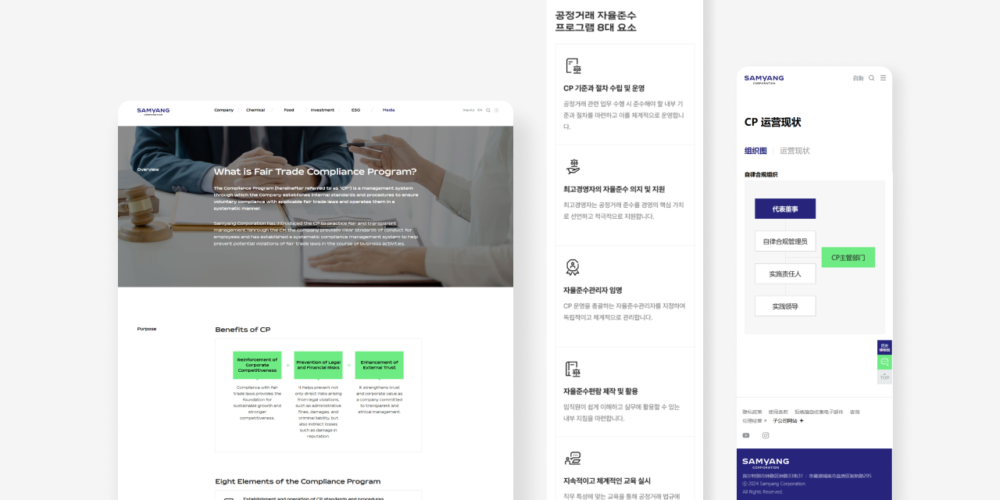
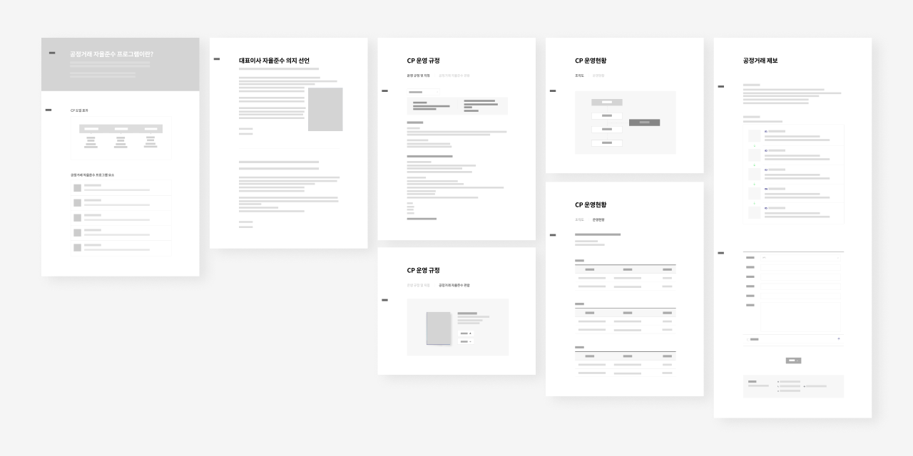
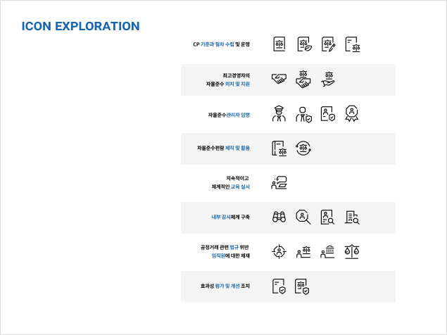
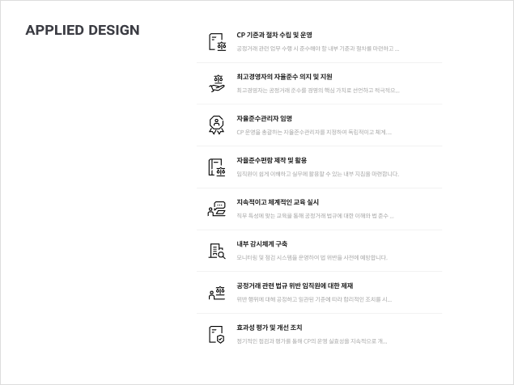
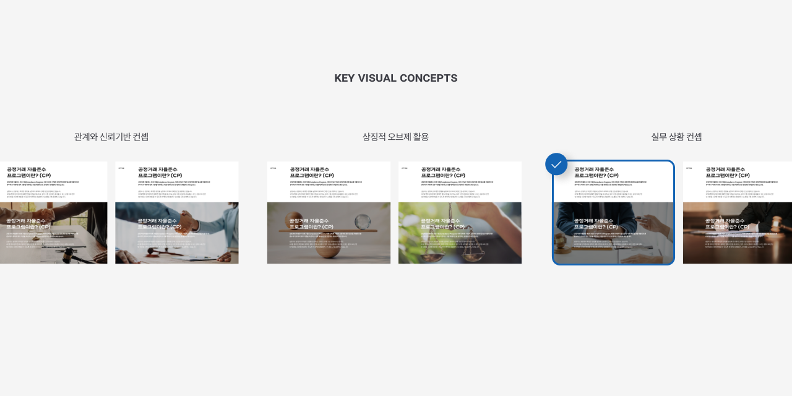
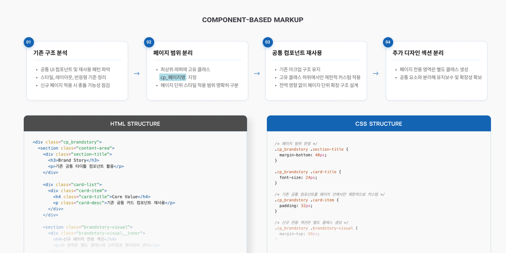

신규 페이지 디자인 및 퍼블리싱
브랜드 가이드를 기반으로 신규 콘텐츠에 맞는 UI 구조를 설계하고, 다국어 및 반응형까지 포함하여 디자인부터 퍼블리싱까지 일관되게 구축하였다.

신규 페이지 메인 UI 구성
Context
사내 운영 업무 중 하나로 신규 페이지 디자인 및 퍼블리싱을 담당하게 되었으며, 총 5개 페이지에 대해 디자인부터 개발까지 전 과정을 직접 수행했다.
국문, 영문, 중문 다국어 지원과 모바일 반응형까지 고려해야 하는 프로젝트였다.
Problem
신규 콘텐츠에 맞는 페이지 제작이 필요했으나, 기존에는 해당 유형의 레이아웃이나 구조가 정의되어 있지 않았다.
또한 브랜드 가이드를 유지하면서도 새로운 콘텐츠에 적합한 UI를 설계해야 하는 상황이었다.
Issue
기존 가이드를 유지하면서도 새로운 콘텐츠에 맞는 구조를 만들어야 하는 점이 핵심 과제였다.
- 기존에 없는 레이아웃 설계 필요
- 신규 아이콘 및 시각 요소 제작 필요
- 다국어 및 반응형 대응
- 기존 코드와의 충돌 없이 확장 필요

신규 레이아웃 구조 설계
My Judgment
브랜드 일관성을 유지하면서도 새로운 구조를 자연스럽게 녹여내는 것이 중요하다고 판단했다.
- 브랜드 컬러 및 톤 유지
- 기존 UI 흐름과의 연결성
- 다국어 및 반응형에서도 깨지지 않는 구조
- 유지보수를 고려한 코드 구조
Strategy
- 브랜드 가이드를 기준으로 디자인 방향 설정
- 신규 콘텐츠에 맞는 레이아웃 구조 설계
- 필요한 아이콘 및 시각 요소 직접 제작
- 피그마에서 모바일 포함 전체 구조 설계
- 퍼블리싱 시 기존 코드 재사용 + 구조 개선 병행



데스크탑 / 모바일 반응형 구현
Execution
- 피그마를 활용한 전체 페이지 디자인 및 반응형 설계
- 신규 아이콘 제작 및 시각 요소 구성
- 총 5개 페이지 UI 디자인 및 퍼블리싱 진행
- 국/영/중 다국어 대응 및 레이아웃 안정성 확보
- 모바일 환경까지 고려한 반응형 구현
- 기존 소스를 기반으로 재사용 가능한 구조 설계
- 고유 클래스 네이밍으로 스타일 충돌 방지 및 코드 중복 최소화

코드 구조 및 클래스 네이밍 설계
Result
브랜드 가이드를 유지하면서도 신규 콘텐츠에 적합한 UI 구조를 구축하였다.
다국어 및 반응형 환경에서도 레이아웃 깨짐 없이 안정적으로 구현되었으며, 기존 코드와의 충돌 없이 확장 가능한 형태로 페이지가 구성되었다.
운영 업무에서도 단순 제작이 아닌 구조 설계 능력이 중요하다는 것을 확인한 작업이었다.
브랜드 일관성과 확장성은 동시에 고려되어야 하며, 퍼블리싱 단계에서도 설계적인 접근이 필요하다는 기준을 정립했다.
특히 다국어와 반응형은 초기 설계 단계에서 함께 고려해야 후반 작업의 비용을 줄일 수 있다는 점을 확인했다.